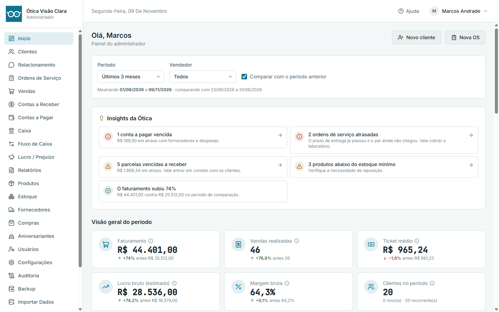
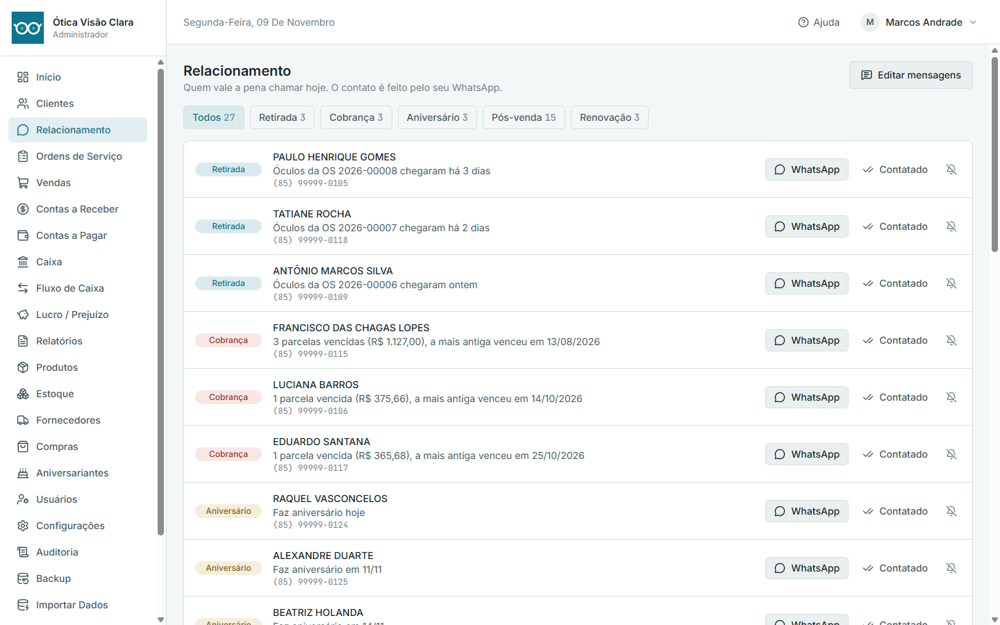
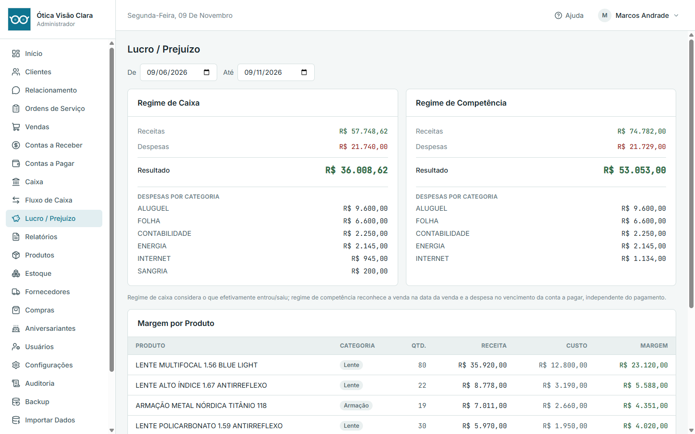
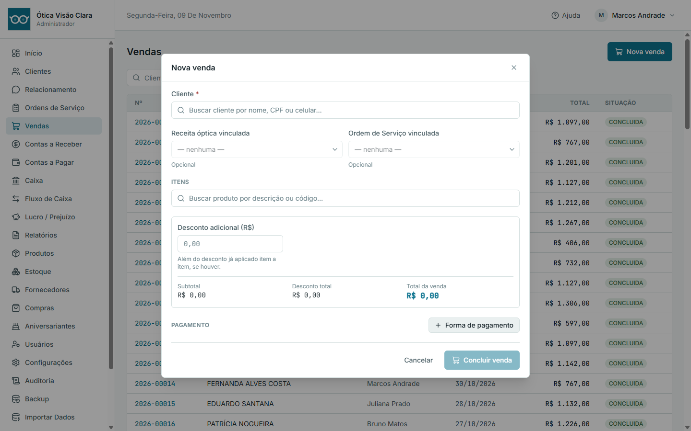

Óculos que chegam e ninguém avisa
O par chegou do laboratório há uma semana e o cliente nem sabe. O OptiAleph mostra o que está pronto para retirada e já abre a conversa no WhatsApp.
Sistema de gestão para óticas
Receita óptica, ordens de serviço, vendas, estoque, financeiro e a lista de quem chamar hoje, tudo num só lugar. Instala no seu computador e funciona mesmo com a internet fora do ar.

Por que trocar
O par chegou do laboratório há uma semana e o cliente nem sabe. O OptiAleph mostra o que está pronto para retirada e já abre a conversa no WhatsApp.
Contas a receber com destaque para o que venceu, baixa total ou parcial, e cada baixa vira lançamento financeiro sozinha.
Faturamento não é lucro. O sistema mostra o resultado por regime de caixa e de competência, e a margem de cada produto.
O que ele faz
Feito com a rotina de ótica em mente: receita com grade OD/OE, lentes com índice e tratamento, laboratório e prazo de entrega.
Cadastro com busca por nome, CPF ou celular. Receita com grade longe e perto para os dois olhos, adição calculada sozinha e histórico de versões.
Numeração sequencial, etapas Em aberto, Laboratório, Chegou e Entregue, alerta de atraso e protocolo de saída para imprimir.
Vários itens, pagamento misto (por exemplo PIX + cartão em 3x), desconto por item e no total, comissão do vendedor e cancelamento com estorno.
Armações, lentes, acessórios e serviços. Entrada de mercadoria com custo médio, saldo mínimo e ajuste por contagem física.
Contas a receber e a pagar, despesas recorrentes, caixa com abertura, sangria e fechamento, fluxo de caixa e lucro ou prejuízo.
Faturamento, ticket médio, lucro bruto, ranking de vendedores e produtos mais vendidos, comparando com o período anterior.
OS, comprovante de venda, carnê, inadimplência, curva ABC, comissões e mais. Abrem na tela, com zoom, e imprimem direto.
Logo, cor de destaque e dados da ótica aparecem na tela e nos relatórios. Tema claro, escuro ou automático.
Manual com busca e botão de ajuda que abre direto a seção da tela em que você está. Também sai em PDF.
Relacionamento
O sistema olha os dados que você já tem e monta a lista de clientes que merecem um contato agora:
Um clique abre o seu WhatsApp com a mensagem já escrita. Depois você marca Contatado e o cliente sai da lista. A seção Resultados mostra quantos voltaram a comprar depois do contato.
O OptiAleph não envia mensagens por conta própria. Quem fala com o cliente é você, pelo seu número, sem risco de bloqueio. Quem pede para não ser contatado sai das listas (LGPD).


Financeiro
Venda, estoque e financeiro andam juntos: ao concluir uma venda, o estoque baixa e o lançamento financeiro é criado na mesma operação. Nada fica pela metade.
Por dentro
Imagens reais do OptiAleph, com dados de exemplo de uma ótica fictícia.

Tranquilidade
O banco de dados fica no seu computador. Caiu a internet, a ótica continua vendendo.
Cópia de segurança feita sozinha, com verificação de integridade e alerta se ficar dias sem backup. Restaurar pede confirmação e guarda um backup do estado atual antes.
Senhas guardadas com Argon2id, bloqueio progressivo após erros e troca obrigatória no primeiro acesso. Cada ação importante fica na Auditoria.
Antes de aplicar uma nova versão, o sistema faz backup. Se algo falhar, o banco volta ao estado anterior, sem ficar pela metade.
O Vendedor só enxerga as próprias vendas e não vê custo nem margem. A regra vale nos dados, não só nos botões escondidos.
Se a licença vencer, o sistema passa a somente leitura. Você continua consultando e fazendo backup, e nada é apagado.
Vindo de outro sistema?
Clientes, exames e financeiro do MD Óculos são importados direto para o OptiAleph, sem digitar nada de novo.
Teste e licença
Todos os recursos liberados, sem cartão de crédito. Se não for para você, nada é cobrado e seus dados continuam acessíveis para consulta.
Depois do teste, a ativação é feita por uma chave de licença da sua ótica, validada no seu computador, sem precisar de internet. Fale com a gente para conhecer as condições.
Dúvidas
Não. O OptiAleph roda no seu computador e guarda tudo localmente. A internet só é necessária se você quiser abrir o WhatsApp para falar com um cliente.
Em computadores com Windows. A instalação é por um instalador único, sem etapas técnicas.
Não, de propósito. Ele monta a lista e deixa a mensagem pronta, e você envia pelo seu próprio WhatsApp. Assim o número da ótica não corre risco de bloqueio.
Sim. Você coloca seu logo, escolhe a cor de destaque e informa os dados da ótica. Isso aparece na tela e nos relatórios impressos.
Sim. Há uma ferramenta de importação de clientes, exames e financeiro, com análise antes de gravar e backup antes de importar.
O sistema fica somente leitura e nenhum dado é apagado. Você continua consultando e fazendo backup, e volta a lançar assim que ativar a licença.
Você cadastra os usuários da sua equipe com dois perfis: Administrador, que vê tudo, e Vendedor, que vê só o que é dele.
Peça o instalador e use o OptiAleph por 30 dias, sem compromisso.